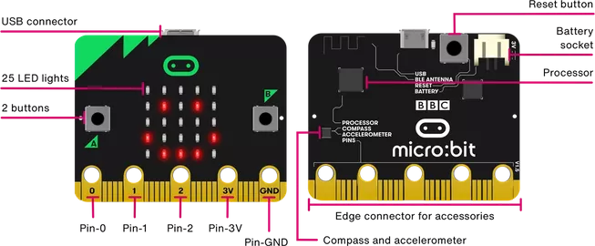
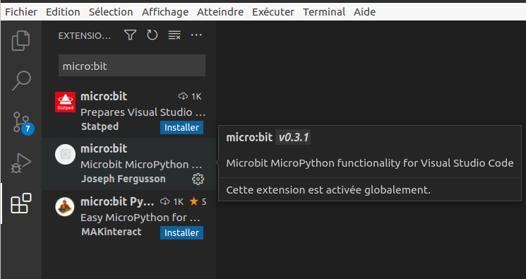
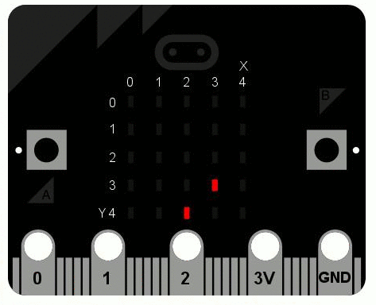

C15 Interface homme-machine
Important
Pour la mise en oeuvre de ce chapitre, on utilise la carte micro:bit. On ne présente ici que quelques fonctionnalités de base, la documentation complète de la carte est disponible sur le Web.
Activités
 Activité 1 : Capteurs et actionneurs
Activité 1 : Capteurs et actionneurs

-
Sachant que les capteurs sont les éléments permettant de collecter des informations provenant de l'environnement et que les actionneurs sont les éléments permettant d'agir dans le monde réel (production d'affichages, sons, vibrations, ...) identifier les capteurs et les actionneurs d'une carte micro:bit.
Aide
Voir cette page de documentation. Attention, deux types de cartes sont présentées, celles utilisées dans ce cours sont les Micro:bit original.
-
La nouvelle carte Micro:bit possède un micro, est-ce un capteur ou un actionneur ?
-
Ce micro est équipé d'une led qui s'allume lorsque le micro est activé, est-ce un capteur ou un actionneur ?
Activité 2 : Premier programme avec une carte Microbit
L'idéal est bien sûr, est de disposer d'une carte, dans le cas contraire un emulateur en ligne est disponible. En classe, des cartes vous seront prêtées et on utilisera l'éditeur VS code avec lequel nous sommes déjà familiarisés, mais qui doit être configuré pour fonctionner avec la carte.
-
Configuration de VS Code
- Dans l'onglet extension rechercher
micro:bitet installermicro:bit(par Joseph Fergusson).  - Ouvrir un dossier de travail, puis dans le menu affichage sélectionner
Palette de commandeset tapermicro. Dans la liste de commandes qui apparaît, sélectionnerFetch micro:bit modules. -
Créer un fichier portant l'extension
.pyen haut et à droite de la fenêtre de l'éditeur la commandeBuild current file to Micro:Bitvous permettra maintenant de transférer votre programme.Note
Pour une utilisation à la maison, si vous disposez d'une carte Microbit, il faut aussi installer uflash avec la commande
pip install uflash. Cela est déjà fait sur les ordinateurs du lycée.
- Dans l'onglet extension rechercher
-
Premier programme
- Connecter votre carte Microbit à votre ordinateur par un port usb
-
Copier et sauver le programme suivant dans VS Code :
1 2 3 4
from microbit import * display.show(Image.SMILE) sleep(2000) display.scroll("Salut !") -
Sélectionner
Build current file to Micro:Bit. La diode lumineuse située à l'arrière de l'appareil devrait clignoter pour indiquer que le transfert du programme vers la carte est en cours. Ensuite, elle devrait afficher l'image d'un sourire et faire défiler le message "Salut !".
Note
Pour une liste complète des images prédéfinies consulter cette page
Activité 3 : Utilisation des boutons
On souhaite programmer la carte pour qu'elle affiche un compteur, le numéro affiché augmente avec un appui sur le bouton B et diminue avec un appui sur bouton B. C'est le principe de l'affichage des numéros des clients qui sont servis dans un commerce où le client récupère un ticket indiquant son ordre de passage à l'entrée.
-
Recopier, compléter et tester le programme suivant :
2. Expliquer l'utilisation de1 2 3 4 5 6 7 8
from microbit import * compteur = 1 while True: display.scroll(str(compteur)) if button_b.was_pressed(): compteur ..... if button_a.was_pressed(): compteur .....strligne 4
3. Quel est le but de la boucle while à la ligne 3 ?Aide
On remarquera l'utilisation de
was_pressed()(et pasis_pressed()) pour les boutons. -
On suppose que les numéros des tickets des clients reviennent à zéro dès qu'ils dépassent 10. Modifier le programme en conséquence, c'est à dire qu'un appui sur le bouton B fera passer le compteur à 1 s'il était à 10.
Cours
Vous pouvez télécharger une copie au format pdf du diaporama de synthèse de cours présenté en classe :
Attention
Ce diaporama ne vous donne que quelques points de repères lors de vos révisions. Il devrait être complété par la relecture attentive de vos propres notes de cours et par une révision approfondie des exercices.
QCM
1. Parmi les dispositifs d'entrée et de sortie suivants, lequel est uniquement un capteur ?
- a) Le thermomètre
- b) La diode
- c) L'écran tactile
- d) Le moteur pas à pas
- a) Le thermomètre
- b)
La diode - c)
L'écran tactile - d)
Le moteur pas à pas
2. Parmi les dispositifs suivants, lequel est à la fois un capteur et un actionneur ?
- a) Une diode
- b) Une boussole
- c) Un accéléromètre
- d) Un écran tactile
- a)
Une diode - b)
Une boussole - c)
Un accéléromètre - d) Un écran tactile
Exercices
Exercice 1 : Utilisation de l'acceleromètre
- Recopier et tester le programme suivant :
1 2 3 4 5 6 7 8 | |
3. Modifier ce programme afin qu'il affiche au hasard l'une des 26 lettres de l'alphabet lorsque la carte est orientée face vers le haut.
Aide
- On pourra utiliser la fonction
chrde Python, on rappelle que le code de A est 65. - La liste des gestes détectées par la carte (secouer, orienter ...) est disponible sur cette page
Exercice 2 : Affichage pixel par pixel
Les 25 diodes situés sur la carte peuvent être activées individuellement et avec un niveau d'intensité variable grâce à l'instruction : display.set_pixel(x,y,lum) où x est la colonne du pixel (de 0 celle de gauche à 4 celle de droite), y est la ligne du pixel (de 0 en haut à 4 en bas) et lum l'intensité lumineuse (de 0 éteint à 9 luminosité maximale).
- Ecrire un programme permettant de reproduire l'affichage ci-dessous : 
- Programmer la carte pour qu'on puisse déplacer à l'aide des boutons A et B un pixel situé sur la ligne 4. Le bouton A déplace le pixel à gauche (et il est bloqué en atteignant la colonne 0) et le bouton B le déplace vers la droite (il est bloqué en atteignant le dernière colonne)
Exercice 3 : Un retour sur la dichotomie
Exercice d'après une idée de M.Coilhac.
On pense à un nombre compris entre 1 et 1000 et la carte Micro:bit doit trouver ce nombre. A la première étape la carte propose 500 car (0+1000)//2=500.
- Si votre nombre est strictement plus petit, vous appuyez sur A.
- Si votre nombre est strictement plus grand, vous appuyez sur B.
- Sinon (c'est votre nombre) et vous appuyez sur A et B simultanément. La carte affiche alors un
Image.SMILE.
Le processus se répète aux étapes suivantes en utilisant l'algorithme de recherche par dichotomie.
Exercice 4 : Quelques idées de mini-projets
- Un jeu de mémoire dans lequel la carte affiche une liste d'images (chacune environ 1 secondes). Ensuite, la carte affiche une image fixe et vous devez indiquer si cette image était ou non dans celles affichées au début.
- Un jeu pierre-feuille-ciseaux
- Un jeu de mesure du temps de réaction.
Pour aller plus loin
Pour aller plus loin avec la carte micro:bit et pour des idées de projets, on pourra par exemple consulter les sites suivants :